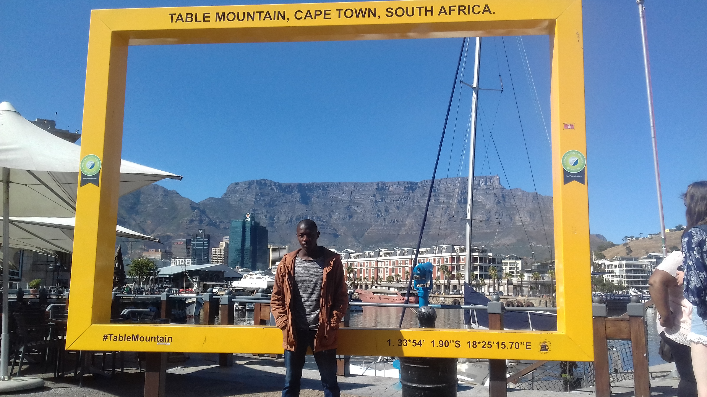
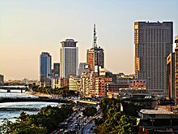
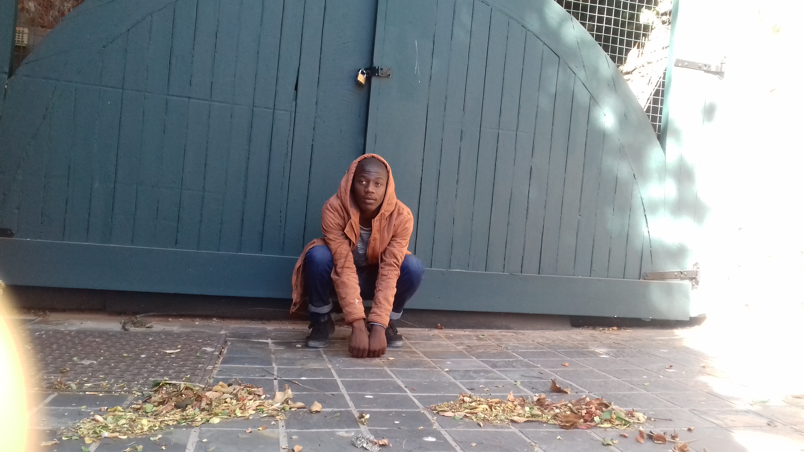
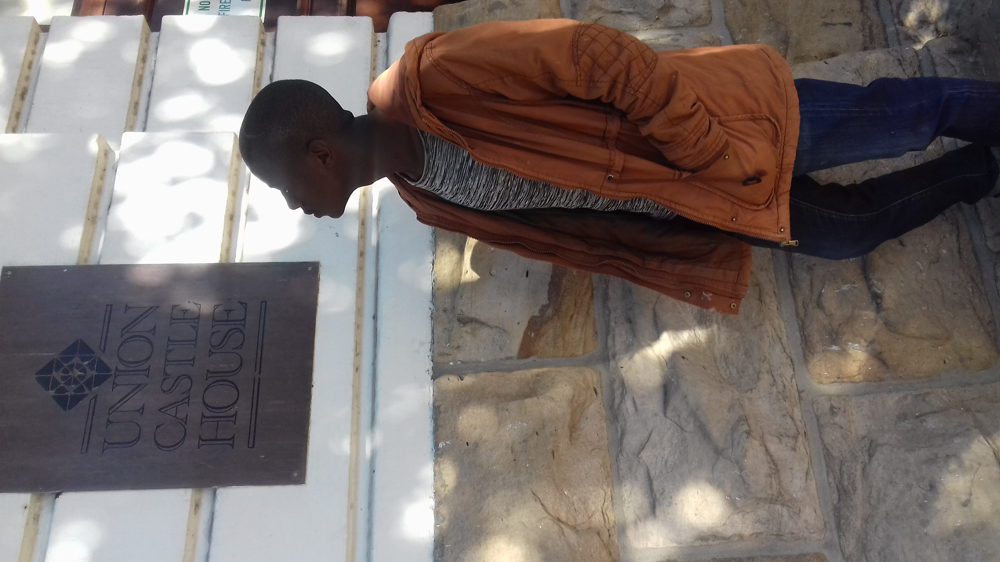
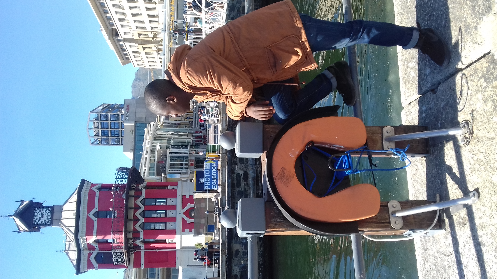

LOYISO
MKAZA
EGYPT, Cairo

- Cairo is a city in which the past and present are inextricably intertwined. Its history is long, colourful, and turbulent. Despite the presence of the Pyramids, Cairo is not technically a Pharaonic city. Rather, it is an amalgamation of separate cities that were established by successive conquerors since Persian times. But seeing as modern day Greater Cairo has expanded to include the remains of the ancient Egyptian past, this is the natural starting point for an exploration of Cairo's tangled history.
- Nile runs through Cairo, and there are two large islands in the middle of the city.
- Cairo was founded in 969 by the Fatimid Caliphate from Tunisia, though there were earlier Islamic, Byzantine, Roman, Persian and Pharaonic settlements, including the legendary Memphis.
Foreign language
| portugese |
english |
| Boa tarde |
Good morning |
| como você está? |
how are you? |
| obrigado |
thank you |
Historic places in the V&A Waterfront
1. Portswood Tunnel

2. Castle Union Building

- This small museum, appropriately located at the V&A Waterfront, displays models of ships that have come and gone from this port city over the last hundred years or so.
- This small museum, appropriately located at the V&A Waterfront, displays models of ships that have come and gone from this port city over the last hundred years or so. It boasts the largest collection of model ships in the country as well as some interesting information on the whaling industry, local wrecks and the history of Table Bay. Outside, you can board SAS Somerset and a coal-fired steam tug for a nose around.
- Decimal degrees: -33.905451 (Latitude) 18.420031 (Longitude)
3. Clock Tower

- Situated near the site of the original Bertie's Landing Restaurant, the Waterfront Clock Tower acted as the original Port Captain's office. Construction of the Clock Tower was completed in 1882.
- The Clock Tower boasts an old tidal-gauge mechanism on the bottom floor, which was used to check tide levels. The second floor holds a decorative mirror room, which enabled the port captain a full view of all harbour activities. The clock mechanism can be found on the top floor and thanks to the restoration of this national monument in 1997, the original clock is still in use today.
- Restoration of the Clock Tower was completed in 1997, and is now an important focal point in the Waterfront's urban design, and the Clock Tower Centre.